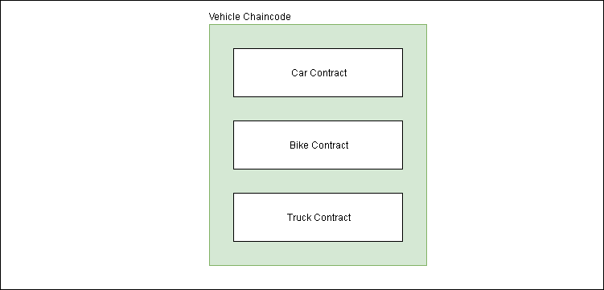

Often Hyperledger Fabric users use the terms smart contract and chaincode interchangeably. Lets first understand what a smart contract is:
A smart contract is a computer protocol intended to digitally facilitate, verify, or enforce the negotiation or performance of a contract. Smart contracts allow the performance of credible transactions without third parties. These transactions are trackable and irreversible. — Wikipedia
Let's deduce this in simple language — a contract can execute on its own if it satisfies the terms of the contract without any interference from a third party.
In Hyperledger Fabric:
A smart contract defines the transaction logic that controls the lifecycle of a business object contained in the world state.
Too technical? Let's simplify it. Let’s take an example of a Car whose owner is Alice. The object is Car and it is saved in the World State.
World State stores the latest state of any object while the blockchain stores all the history of the object from its creation to its current state.
- Now, Alice wants to sell this car to Bob.
- Alice will initiate a transaction proposal to change the ownership from her to Bob.
- The smart contract will change the ownership of the car in the world state according to the transaction logic.
In Fabric, a smart contract is packaged into the chaincode and then chaincode is deployed to a blockchain network. For simple understanding, you can think of chaincode as the superset of the smart contracts.
Multiple smart contracts can be defined within the same chaincode.
There can be a chaincode for a Vehicle and it can have multiple smart contracts such as Car Contract, Bike Contract, and Truck Contract.

Every chaincode has an endorsement policy associated to it while deploying it on a blockchain network. This endorsement policy will apply to all the smart contracts defined in it.
An endorsement policy is the guideline which defines which organizations must sign a transaction to declared the transaction as valid.
In short, the smart contracts manage the transaction logic or business logic while chaincode manages the smart contracts defined in it.
In the Fabric documentation, chaincode’s definition varies a little bit according to the audience.
In “Key Concepts”, the definitions are precise and short. Ideal for the beginners. According to key concepts, chaincode is a program which works according to the business logic written in it.
For developers, a chaincode is typically used by administrators to group related smart contracts for deployment, but can also be used for low-level system programming of Fabric.
For a deeper understanding of fabric concepts keep reading.
References:
Smart Contracts and Chaincode - hyperledger-fabricdocs master documentation
Chaincode Tutorials - hyperledger-fabricdocs master documentation
Chaincode for Developers - hyperledger-fabricdocs master documentation